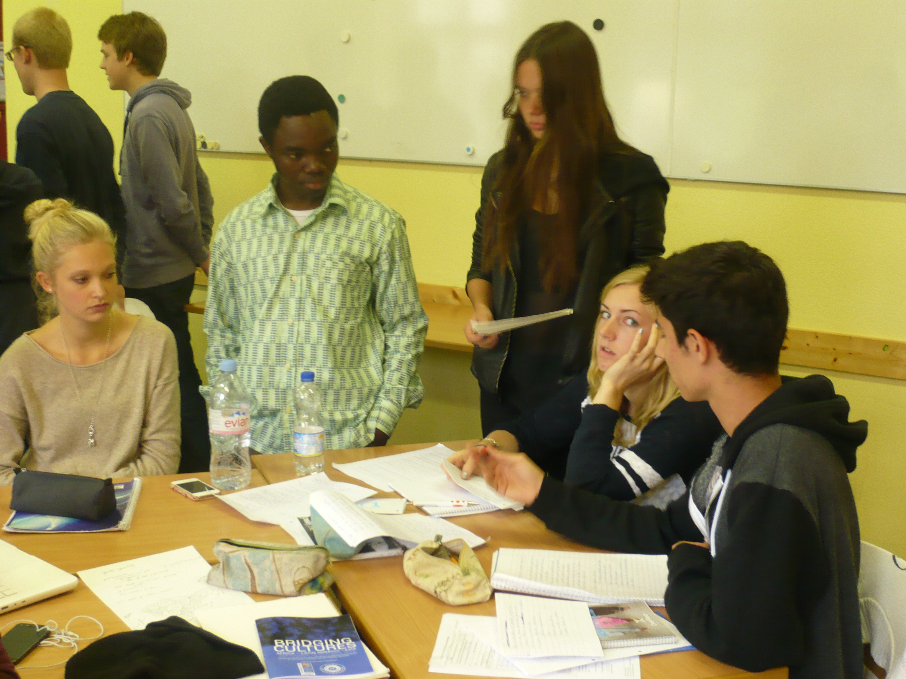
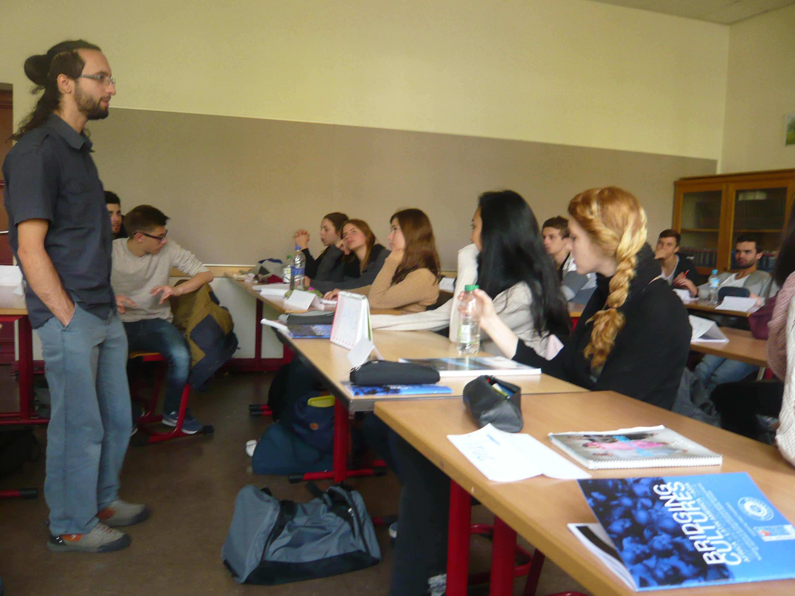

"Wir mochten es, direkt mit unseren TrainerInnen sprechen und von ihnen über ihre Kultur lernen zu können, und das auf kreative Art und Weise anstatt auf nur theoretischem Weg."
Seit dem 8. September 2014 ist das Bridging Cultures Team von Neuem an sieben Berliner Gymnasien und Oberschulen unterwegs. Dabei sind: Melanchthon-Gymnasium Hellersdorf, Otto-Nagel-Gymnasium Biesdorf, Herder-Gymnasium Charlottenburg, Jüdisches Gymnasium Mitte, Georg-Herwegh-Gymnasium Hermsdorf, Paulsen-Gymnasium Steglitz und das Max-Planck-Gymnasium Mitte. An diesen Schulen haben zweitägige Workshops in englischer Sprache stattgefunden. Dabei wurden einerseits in Präsentationen und Vorträgen spannende Informationen durch unsere TrainerInnen vermittelt. Andererseits gab es Raum für Diskussionen in Kleingruppen und Eigeninitiativen seitens der SchülerInnen, die am Ende des zweiten Tages in kreativen Präsentationen – Dramen, Powerpoint, Kurzfilme – der gesamten Gruppe vorstellten, was sie in den Workshops gelernt haben.
Die Arbeit in den Workshops wurde dieses Jahr von TrainerInnen aus Brasilien, Kirgisistan und Ghana gestaltet. Dadurch sollte eine Platform für kulturellen Austausch und gegenseitiges Kennenlernen von besonderen Aspekten der Länder geschaffen werden. Ausserdem gaben die Trainer konkrete Problemstellungen aus ihren Ländern an, mit denen die SchülerInnen während der zwei Tage arbeiteten. Themen waren beispielsweise die Landnutzung in Brasiliens Regenwald und die dadurch entstehenden Konsequenzen für die indigene Bevölkerung. Andere Schwerpunkte im Ghanaworkshop waren das Erreichen der Millenium Development Goals (MDGs) in Bezug auf die Gesundheitsversorgung von Müttern und die Stärkung der Rolle der Frau. Die Trainerin aus Kirgisistan beschäftigte sich mit der problematischen Tradition von Brautentführungen, den Rechten von Homosexuellen und Korruption.
Arbeitsweisen die in den Workshops angewandt wurden, waren z.B. sog. "Silent Discussions", in denen ein Zitat oder eine Problemstellung anhand eines "Mindmap" analysiert und manchmal widerlegt wurden. Dieses "Mindmap" - wie auf dem Foto zu sehen - diente dann als Grundlage für eine rege Diskussion im Plenum. Ein Zitat das hierfür verwendet wurde, war Roger Baldw ins "Schweigen hat nie Rechte herbeigeführt. Sie werden nicht von oben heruntergereicht; sie werden durch Druck von unten durchgesetzt.". Um die Arbeit während der Workshops etwas zu variieren, wurden auch sog. "Icebreakers" implementiert. Hierbei haben die Trainer eine problematische Aussage wie "Sind Stereotypen wahr? Wozu dienen Sie?" in den Raum gestellt und von den Schülern die verschiedenen Meinungen dazu abgefragt. Besonders bei solchen kontroversen Aussagen gab es lange und interessante Disk
ins "Schweigen hat nie Rechte herbeigeführt. Sie werden nicht von oben heruntergereicht; sie werden durch Druck von unten durchgesetzt.". Um die Arbeit während der Workshops etwas zu variieren, wurden auch sog. "Icebreakers" implementiert. Hierbei haben die Trainer eine problematische Aussage wie "Sind Stereotypen wahr? Wozu dienen Sie?" in den Raum gestellt und von den Schülern die verschiedenen Meinungen dazu abgefragt. Besonders bei solchen kontroversen Aussagen gab es lange und interessante Disk ussionen. Unser Trainer aus Ghana zitiert zur Wichtigkeit dieser Übung die englischsprachige nigerianische Schriftstellerin Chimamanda Ngozi Adichie: "Die alleinstehende Erzählung schafft Stereotypen und das Problem bei Stereotypen ist nicht, dass sie falsch sind, sondern dass sie unvollständig sind. Sie lassen eine Erzählung als die einzige Erzählung dastehen.". Eine andere Aktivität war das sog. "Global Cafe" das eine Simulation eines Konflikts darstellt. In dieser Simulation repräsentiert jede Schülergruppe eine Konfliktpartei, z.B. bestehend aus zwei Staaten, der UN und Flüchtlingen. Am Ende präsentieren die SchülerInnen ihren Lösungsvorschlag zum Konflikt. Die kirgisische Trainerin erklärt warum sie so eine Aktivität für wichtig hält: "In der vernetzten globalen Welt von heute ist es für junge Erwachsene wichtig, die Dynamik des Kommunizierens, Verhandelns und Engagierens in der politischen Arena der globalen Konflikte zu verstehen. Dieses 'Global Cafe' kann als Mittel zur Gewinnung neuer Perspektiven auf die globale Politik verwendet werden."
ussionen. Unser Trainer aus Ghana zitiert zur Wichtigkeit dieser Übung die englischsprachige nigerianische Schriftstellerin Chimamanda Ngozi Adichie: "Die alleinstehende Erzählung schafft Stereotypen und das Problem bei Stereotypen ist nicht, dass sie falsch sind, sondern dass sie unvollständig sind. Sie lassen eine Erzählung als die einzige Erzählung dastehen.". Eine andere Aktivität war das sog. "Global Cafe" das eine Simulation eines Konflikts darstellt. In dieser Simulation repräsentiert jede Schülergruppe eine Konfliktpartei, z.B. bestehend aus zwei Staaten, der UN und Flüchtlingen. Am Ende präsentieren die SchülerInnen ihren Lösungsvorschlag zum Konflikt. Die kirgisische Trainerin erklärt warum sie so eine Aktivität für wichtig hält: "In der vernetzten globalen Welt von heute ist es für junge Erwachsene wichtig, die Dynamik des Kommunizierens, Verhandelns und Engagierens in der politischen Arena der globalen Konflikte zu verstehen. Dieses 'Global Cafe' kann als Mittel zur Gewinnung neuer Perspektiven auf die globale Politik verwendet werden."
Als gemeinsamer außerschulischer Abschluss des Projekts ist für den 17. Oktober 2014 der Global Day geplant. Dazu werden wir mit einigen interessierten SchülerInnen einen Abend voller kulinarischer Köstlichkeiten, Tanz, Spiele und Filme aus den verschiedenen Ländern veranstalten. Dieser Global Day soll dazu dienen das zuvor in den Workshops Gelernte zu verinnerlichen. Ziel der Verstanstaltung ist es also dieses Wissen in einem unformellen Rahmen abzurufen, offene Fragen und Unklarheiten zu erkennen und zu diskutieren. In persönlicher und interaktiver Atmosphäre werden nach dem gemeinsamen Essen ebenfalls Kurzdokumentationen zu den in den Workshops behandelten Themen gezeigt und diskutiert. Der Global Day versteht sich also als Fortsetzung von Bridging Cultures mit dem Potential langfristig Fremdbilder und Stereotypen abzubauen. Ausserdem soll eine Sensibilisierung in Bezug auf entwicklungspolitische Problemstellungen entstehen.
All denjenigen, die das diesjährige Bridging Cultures Projekt und den Global Day unterstützt haben möchten wir herzlich danken. Besonders seien an dieser Stelle unsere Förderer erwähnt: Berliner Senatsverwaltung für Wirtschaft, Technologie und Forschung - Landesstelle für Entwicklungszusammenarbeit; Brot für die Welt – Evangelischer Entwicklungsdienst; BMZ – Bundesministerium für wirtschaftliche Zusammenarbeit und Entwicklung; JFSB - Jugend- und Familienstiftung des Landes Berlin; Katholischer Fonds.
Wir laden alle ein dieses Projekt auch auf Facebook zu begleiten! Weitere Bilder und allgemeine Infos zum Projekt finden Sie ebenfalls.
24. Februar 2021
Virtueller Malarathon – Benefiz-Lauf gegen Malaria in Kamerun

24. Februar 2021
Living with the tiger
16. Dezember 2020
Hoffnung in Zeiten von Corona
15. Dezember 2020
RIBS: Ein Blick Zurück und nach Vorne
15. Dezember 2020
Filter und Netze gegen Malaria
1 | 2 | 3 | 4 | 5 | 6 | 7 | 8 | 9 | 10 | 11 | 12 | 13 | 14 | 15 | 16 | 17 | 18 | 19 | 20 | ª